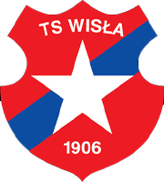

Wisła Kraków - ostatnie mecze w ekstraklasie :)
25 kwi 2022 | 19:00 Wisła Kraków 3 - 4 Wisła Płock 1 maj 2022 | 17:30 Cracovia 0 - 0 Wisła Kraków 7 maj 2022 | 20:00 Wisła Kraków 0 - 0 Jagiellonia Białystok 15 maj 2022 | 17:30 Radomiak Radom 4 - 2 Wisła Kraków 21 maj 2022 | 17:30 Wisła Kraków 0 - 1 Warta Poznań
Wisełka - powiązane strony
Wisla.krakow.plWislaportal.pl
Facebook - Wisełka
Pierwsza Liga Polska
Powiązane strony z dużą ilością ciekawaych informacji o wiślę.